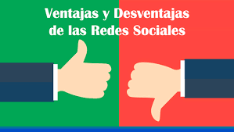

Redes Sociales

Comunicar y compartir. Las redes sociales funcionan como plataformas para el intercambio de información u opinión. Según el tipo de red, varían las funcionalidades y el tipo de comunicación que se establece entre los usuarios. En muchas de ellas, los usuarios pueden compartir imágenes, videos, documentos, opiniones e información.
Mantener o establecer contacto. Las redes permiten a todas las personas que poseen acceso a Internet crearse un usuario en la red y conectarse con otros alrededor del planeta que también estén adheridos a esa red social. Permiten comunicarse con amigos, familiares, hacer nuevas amistades, buscar pareja, establecer relaciones laborales o profesionales.
Informarse. El gran caudal de información que circula en las redes sociales
permite a los usuarios mantenerse informados sobre acontecimientos importantes o temáticas de interés. La mayoría de las redes permiten crear un usuario y personalizar el tipo de información que se mostrará en la red.
Entretenerse. Las redes sociales crean comunidades de usuarios con intereses similares sobre determinadas temáticas. Estas redes funcionan como una gran fuente de entretenimiento y distensión.
Vender/comprar. Muchas redes sociales se han erigido como canales para la compra y venta de bienes o servicios. En plataformas como Instagram o Facebook, el usuario puede seguir a los negocios, comercios o trabajadores independientes que sean de su agrado y establecer con ellos relaciones comerciales.